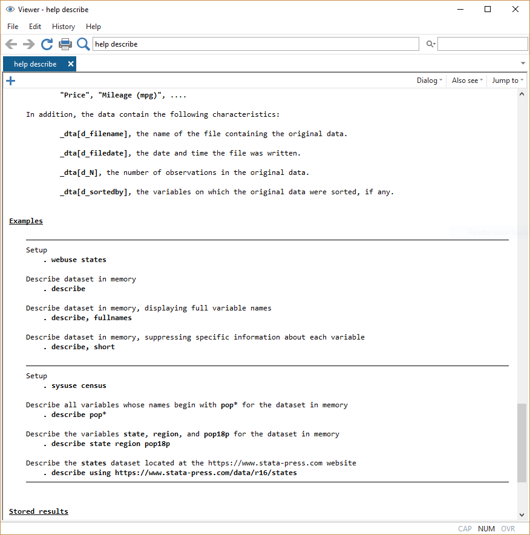

2 Arbeiten mit Datensätzen in Stata
Nachdem wir uns in Stata etwas umgesehen haben, können wir uns jetzt
2.1 Vorab: Befehlsstruktur & Hilfe
Ganz nebenbei haben wir im Kapitel 1 bereits die ersten Stata-Befehle verwendet. Bevor wir jetzt aber tiefer einsteigen nochmal einmal ganz allgemein:
Die grundsätzliche Struktur von Stata-Kommandos ist immer befehl variable, optionen. Zunächst geben wir also immer an, was passieren soll - bisher war das eben zum Beispiel eine Beschreibung (describe) einer Variable:
storage display value
variable name type format label variable label
----------------------------------------------------------------------------------------------------
sex byte %12.0g sex GESCHLECHT, BEFRAGTE(R)Diese können wir mit der Option simple abändern. Optionen werden nach einem , angegeben:
sexBefehle ohne Variable beziehen sich immer auf den gesamten Datensatz, bei describe bekommen wir damit dann eine Übersicht zum Datensatz:
Contains data from D:\oCloud\Home-Cloud\Lehre\Methodenseminar\ZA5270_v2-0-0.dta
obs: 3,477 ALLBUS 2018
vars: 708 28 Mar 2019 16:09
size: 3,431,799
Sorted by: Mit help bekommen wir eine Hilfeseite angezeigt, hilfreich sind dabei vor allem die Beispiele ganz unten:

Kommandos in Stata sind zeilenbasiert. D.h. alles was zu einem Kommando gehört, muss in der gleichen Zeile stehen. Umgekehrt wird auch alles, was in einer Zeile steht als Teil des Kommandos verstanden:
storage display value
variable name type format label variable label
--------------------------------------------------------------------------------
pv01 byte %12.0g pv01 BEFR.: WAHLABSICHT BUNDESTAGSWAHL
age byte %12.0g age ALTER: BEFRAGTE(R)
sex byte %12.0g sex GESCHLECHT, BEFRAGTE(R)Funktioniert nicht:
storage display value
variable name type format label variable label
--------------------------------------------------------------------------------
pv01 byte %12.0g pv01 BEFR.: WAHLABSICHT BUNDESTAGSWAHL
age byte %12.0g age ALTER: BEFRAGTE(R)
unrecognized command: sex
r(199);
end of do-file
r(199);Mit /// können wir Zeilen verknüpfen:
storage display value
variable name type format label variable label
--------------------------------------------------------------------------------
pv01 byte %12.0g pv01 BEFR.: WAHLABSICHT BUNDESTAGSWAHL
age byte %12.0g age ALTER: BEFRAGTE(R)
sex byte %12.0g sex GESCHLECHT, BEFRAGTE(R)Außerdem können wir mit // Kommentare in unsere DoFiles einfügen. // blendet alles folgende am Ende der Zeile aus:
storage display value
variable name type format label variable label
--------------------------------------------------------------------------------
pv01 byte %12.0g pv01 BEFR.: WAHLABSICHT BUNDESTAGSWAHL
age byte %12.0g age ALTER: BEFRAGTE(R)
sex byte %12.0g sex GESCHLECHT, BEFRAGTE(R)2.2 Auszählen & Überblick erhalten
Mit summarize und tabulate bekommen wir eine Übersicht zu den Kennzahlen bzw. eine Auszählung der Häufigkeiten einer Variable. Dies sind wohl die beiden wichtigsten Befehle in Stata:
Variable | Obs Mean Std. Dev. Min Max
-------------+--------------------------------------------------------
age | 3477 51.5568 17.91249 -32 95 Variable | Obs Mean Std. Dev. Min Max
-------------+--------------------------------------------------------
age | 3477 51.5568 17.91249 -32 95
inc | 3477 1620.798 1374.651 -50 18000GESCHLECHT, |
BEFRAGTE(R) | Freq. Percent Cum.
------------+-----------------------------------
MANN | 1,773 50.99 50.99
FRAU | 1,704 49.01 100.00
------------+-----------------------------------
Total | 3,477 100.002.3 Neue Variablen erstellen
Variable | Obs Mean Std. Dev. Min Max
-------------+--------------------------------------------------------
age_mon | 3477 618.6816 214.9499 -384 11402.6 if Bedingungen und fehlende Werte
Fehlende Werte werden von Stata als “unendlich groß” gewertet!
>, <, ==, >=, <=, != oder ~= (ungleich)
+---------------------------+
| sex land age |
|---------------------------|
126. | MANN SACHSEN 94 |
150. | FRAU SACHSEN 92 |
322. | FRAU RHEINLAND-PF . |
353. | MANN NORDRHEIN-WE 94 |
556. | FRAU NORDRHEIN-WE . |
|---------------------------|
1061. | FRAU RHEINLAND-PF 92 |
1342. | FRAU NORDRHEIN-WE . |
1923. | MANN NIEDERSACHSE 91 |
2120. | FRAU BADEN-WUERTT 92 |
2135. | FRAU BRANDENBURG . |
|---------------------------|
2299. | MANN HAMBURG 92 |
2336. | FRAU HESSEN 92 |
2730. | MANN NIEDERSACHSE 92 |
2978. | MANN BADEN-WUERTT 92 |
3130. | MANN HESSEN . |
|---------------------------|
3299. | MANN RHEINLAND-PF 95 |
+---------------------------+inrange
2.7 keep & drop
Manchmal möchten wir
2.8 Nochmal von vorne: Daten neu laden
Variable gelöscht, die doch nötig ist? Falsch recodiert? Das ist zwar ärgerlich, aber ein riesen Vorteil der DoFile-basierten Datenarbeit mit Stata ist die Reproduzierbarkeit. Wir können einfach nochmal von vorne anfangen. Dazu lesen wir die Original-Daten einfach erneut mit use ein. Allerdings ist dann eine Besonderheit zu beachten:
no; dataset in memory has changed since last saved
Wir müssen erst den existierenden Datensatz mit clear löschen
oder die clear Option für use verwenden:
2.9 Speichern
Natürlich können wir unsere Daten auch abspeichern, wenn alles wie gewünscht geklappt hat. Dafür gibt es den Befehl save, der analog zu use funktioniert. Wenn wir allerdings einfach wieder den Original-Datensatznamen angeben und in der Zwischenzeit Variablen erstellt oder gelöscht haben, dann bekommen wir folgende Fehlermeldung:
file auto.dta already exists
r(602);
Wir geben also entweder einen anderen Dateinamen an:
Oder wir teilen Stata mit der Option replace explizit mit, dass die Datei überschrieben werden soll:
2.10 Übungen
Laden Sie den Datensatz
Allbus2018in Stata.Erstellen Sie eine neue Variable mit dem Alter der Befragten im Jahr 2020!
Wählen Sie alle Befragten aus, die nach 1960 geboren wurden und löschen Sie alle anderen aus dem Datensatz.
Wie viele Spalten hat
nach_1960? Wie viele Zeilen? Nutzen Sie für Ihre Antwort die Befehle die wir kennen gelernt haben.
2.11 Fortgeschrittene Themen
2.11.1 sortieren
2.11.2 Indikatoren umdrehen
2.11.3 Informationen aus mehreren Variablen
2.11.4 Informationen aus mehreren Datensätzen
2.11.5 egen
egen ist die Erweiterung von gen und gibt uns die Möglichkeit, eine ganze Reihe von
2.11.7 collapse
Manchmal möchten wir vielleicht nur einen Mittelwert pro Gruppe und die einzelnen Werte interessieren uns gar nicht. Wir möchten unseren Datensatz also verkürzen, sodass er lediglich einen Wert pro Gruppe enthält. Dazu